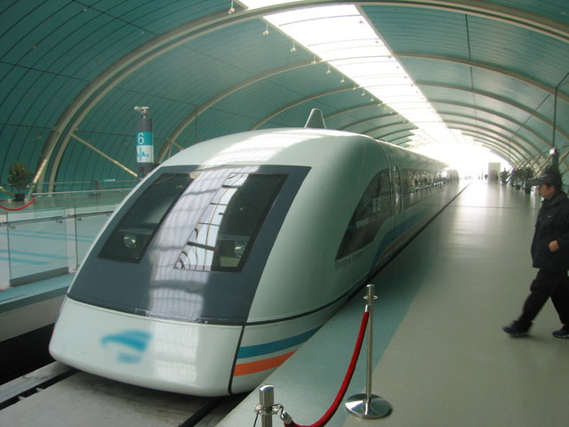
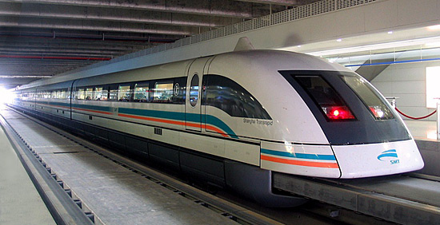

La definició de la Wikipedia diu:
"El transporte de levitación magnética, o maglev, es un sistema de transporte que incluye la suspensión, guía y propulsión de vehículos, principalmente trenes, utilizando un gran número de imanes para la sustentación y la propulsión a base de la levitación magnética."
Això significa, i normalment s'aplica a trens, que la levitació magnètica, que es a base de molts imants posats a les vies i a sota del tren, fa que "floti" sobre les vies i al no haver-hi fricció amb les vies, es poden aconseguir velocitats molt més ràpides.
La idea va sorgir a través de la necesitat de viatjar més ràpid amb algun transport terrestre, i així, anar per exemple d'una punta a l'altre del Japó, no tenir que agafar l'avió i poder agafar el trens.
Funcionament
 Funciona a través d'uns electroimants que es repeleixen entre ells, un situat a la via i l'altre situat a la part inferior del tren.
Funciona a través d'uns electroimants que es repeleixen entre ells, un situat a la via i l'altre situat a la part inferior del tren.
Per desplaçar-se fa servir un motor lineal que genera un camp magnètic de desplaçament i fa que el tren es mogui per la via.
(Clic a la imatge per fer-la gran)
Funcions i Prestacions
En el nostre dia a dia no ens pot aportar res, però per als que viuen al Japó, que és on hi ha més km de vies construides, és un gran avantatge en els seus desplaçament diaris.
